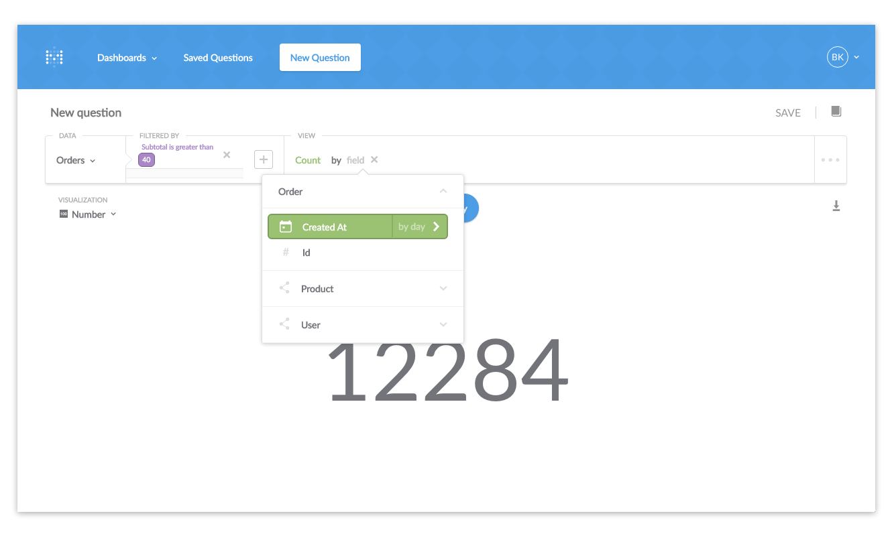
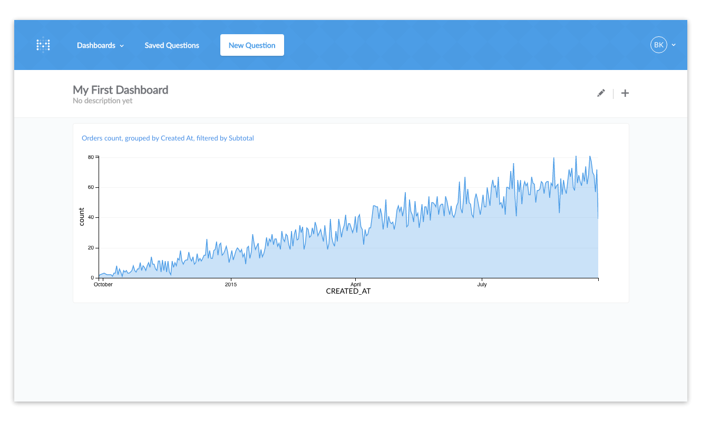

Начало работы с Metabase
Перевод страницы документации Metabase Getting Started with Metabaseopen in new window.
Вход
Способ которым вы входите в Metabase зависит от настроек заданных администратором. Если вы не знаете как войти, спросите об этом человека который отправил вам приглашение в Metabase.
Домашняя страница
После авторизации в Metabase вы увидите ленту активности. Сейчас там мало записей, она наполнится когда вы и ваша команда начнёте работать в Metabase.
Задать новый вопрос
Давайте зададим вопрос. Для следующих примеров мы будем использовать Simple Dataset, который поставляется с Metabase.
Нажмите кнопку New question в верху экрана. Открылась страница нового вопроса. Панель на странице используется чтобы задать вопрос. Выпадающий список Select a table должен быть уже открыт, показывая список наборов данных и таблиц в них.
Наш первый вопрос
Мы собираемся задать вопрос о таблице заказов (Orders) в базе данных Sample Dataset, так что мы нажмём на Orders в выпадающем списке. В таблице Orders находиться набор фиктивных данных о заказах вымышленной компании. Если вы сейчас нажмёте Run query то увидите все данные в таблице.
Давайте начнём с простого вопроса: сколько произведено заказов с промежуточным итогом (пред налогом) большим чем $40. Более точно этот вопрос звучит так "Сколько записей (строк) в таблице Orders со значением большим 40 в колонке Subotal?".
Итак, мы хотим отфильтровать данные по полю которое нас интересует, это поле Subtotal. Поскольку каждая строка в таблице представляет один заказ, подсчёт количества строк после фильтрации даст нам ответ который мы хотим.
После выбора Subtotal из выпадающего списка фильтров (Filtered By) мы получим настройки для фильтра и выберем Grater than, введём число 40 в ячейку и нажмём Add Filter.
Дальше мы должны сказать Metabase что мы хотим увидеть. Под ниспадающим списком View мы выбираем Count, потому что мы хотим посчитать общее количество строк подходящих под фильтр. Если бы мы оставили в View значение Raw Data, то просто увидели бы список всех строк, который не отвечает на наш вопрос.
И наш первый ответ!
Для получения ответа нажмем кнопку Run query.
Ответ показывает 12284 заказов с промежуточным итогом боле $40. Другими словами — в таблице 12284 записей которые подходят под условия которые мы установили.
Тонкая настройка нашего вопроса
Наш вопрос будет более полезен если мы узнаем в какие дни наши клиенты размещали эти большие заказы.
Вернитесь к панели построения вопроса, рядом с Count в области View, нажмите на Add a grouping. Появится выпадающий список колонок которые мы можем использовать для группировки результатов. Нам нужна колонка Created At, она позволит нам разделить общее количество заказов больших $40 по дням в которые эти заказы были созданы. Так что мы выберем Created At и снова нажмём Run query.

Результат изменился — вместо одного большого числа, появилась таблицу показывающая сколько заказов стоимостью более $40 было каждый день. Сразу видно, что таблица не лучший способ визуализации подобной информации.
Изменение визуализации
Metabase может предоставить ответ на ваш вопрос разными способами. Для изменения визуализации, просто выберите один из вариантов из выпадающего списка Visualization, который находиться слева-сверху экрана, над таблицей. Давайте выберем Area.
Похоже бизнес процветает — дела идут хорошо! Попробуйте поиграть с другими вариантами визуализации из выпадающего списка.
Вы заметите что некоторые способы визуализации не лучший путь для показа ответа на конкретный вопрос. Если Metabase думает что это специфичный случай, то это отразиться на выпадающем списке визуализации. Для примера, бессмысленно показывать общее количество заказов дороже $40 в виде гистограммы с одним столбцом или в виде карты.
Попробуйте поиграть со своим вопросом, например, изменить число 40 на другое. Всякий раз при изменении вопроса, кнопка Run query будет появляться снова. Нажмите на неё для того чтобы задать новый вопрос и получить новый ответ.
Поделиться ответами с другими
Вы можете использовать Metabase полностью самостоятельно, но он становится более полезным когда вы начинаете делиться вашими ответами с другими людьми в команде или организации. Первый шаг — сохранить некоторые ваши вопросы.
Сохранение вопросов
Бывает нужно задавать один и тот же вопрос снова и снова: регулярные отчёты, просмотр данных о важных сегментах пользователей, просто одинаковые вопросы от разных людей в компании. Для того чтобы избежать повторений одинаковой последовательности шагов, вопрос можно сохранить для использования позже.
Чтобы это сделать, нажмите кнопку SAVE в верхней-правой части экрана построения вопроса.
Metabase постарается дать вопросу осмысленное имя, но вы можете (и должны) использовать свой принцип именования который поможет вам и другим пользователям найти вопрос позже.
Сохранив вопрос, у вас есть выбор: вернуться на домашнюю страницу, добавить ваш сохранённый вопрос на дашборд или продолжить задавать вопросы. Давайте нажмём Add to dashboard.
Создание дашборда
Сейчас у вас не должно быть дашбордов, так что вы увидите диалог который просит вас создать новый и дать ему имя и описание. Назовите его как хотите. Мы назовём наш My First Dashboard.
Дашборд отлично подходит когда у вас есть набор вопросов и ответов которые вы хотите видеть вместе. Сохранённые вопросы будут отображаться как карточки на дашборде. Можно менять их положение и размер.
Так что, после того как вы нажмёте кнопку для создания дашборда, вы уведите сохранённый вопрос как маленькую карточку.
Вы можете нажать кнопку редактирования в правом-верхнем углу экрана (она выглядит как карандаш) и это позволит вам перемещать и масштабировать сохранённый вопрос, так что вы сможете заставить его выглядеть как вы хотите. Нажмите кнопку Save сверху-справа когда закончите. Мы сделаем наш вопрос немного шире чтобы было лучше видно данные.

Обмен ответами напрямую
Один раз задав вопрос или сохранив дашборд, URL в вашем браузере будет напрямую ссылаться на этот вопрос или дашборд. Это означает что вы можете скопировать и вставить этот URL в email или чат и позволить другим людям увидеть что вы нашли. Это будет работать только если Metabase установлена на общем сервере и у людей, с которыми вы хотите поделиться, есть аккаунты в Metabase.

Для более детального изучения Metabase читайте User Guideopen in new window.